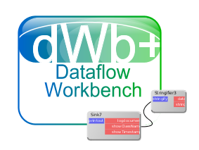

Dokumentation Netzwerklabor mit dWb+

Der Aufbau des Netzwerklabors, wie er in vorhergehenden Artikeln geschildert wurde, ist nicht statisch: Hin und wieder müssen Maschinen entfernt und hinzugefügt oder in andere Netzwerksegmente verschoben werden. Dazu benötigt man ein Mittel zur Dokumentation

Dieses Mittel zur Dokumentation war früher Inkscape - damit hatte ich ein Werkzeug, mit dem sich auf einfache Art und Weise ein Netzwerk dokumentieren ließ. In letzter Zeit arbeite ich wieder verstärkt mit dem Netzwerklabor und dabei wächst es auch hin und wieder. Damit stößt die Inkscape-Variante langsam an ihre Grenzen und eine Umstellung auf ein größeres Dokument oder kleinere Bildelemente um mehr Platz zu haben wäre sehr arbeitsaufwändig.Daher dachte ich eines Tages nach - Inkscape ist ein Graphikprogramm - kein Programm, um Netzwerke zu dokumentieren. Netzwerke sind eigentlich auch nur Graphen. Müsste doch eigentlich ein Programm existieren, mit dem man Netzwerke aund damit Graphen auf einfache Art und Weise dokumentieren können sollte?
Zunächst suchte ich nach OpenSource / kostenlosen Alternativen, fand aber keine. Dann erinnerte ich mich wieder des schönen Zitats aus dem Amiga-Magazin: "Fehlt Dir was? - Programmiers Dir doch!" dWb+ war schon fertig, ich musste es nur noch ein wenig verbessern und schon hatte ich mein Dokumentationswerkzeug - es kann immer noch SVG produzieren, aber auch PDF - den Beweis habe ich hier angehängt:
Das interessante hierbei ist, dass die einzelnen Komponenten des Netzwerks als JSON-Module realisiert sind - man kann also ganz schnell aus beliebigen Drittsystemen solche Module erzeugen - JSON-Export sollte kein Problem sein - und mit ein wenig mehr Aufwand zum Beipiel entsprechende Module nach Wareneingang neuer Geräte automatisch zur Verfügung stellen können.
Weiterhin wäre denkbar, (dWb+ unterstützt selektiv ein- und ausblendbare Layer schon lange) verschiedene Netzwerkinfrastrukturen in verschiedenen Layern zu dokumentieren (IT und elektrisch oder Kupfer und Fiber beispielsweise).
Ein Nachteil dieser Lösung ist die strikte Ausrichtung von links nach rechts: Alle Verbindungen haben eine Richtugn und damit ist es nicht leicht, die Anordnung der Komponenten so zu realisieren, wie gewünscht. Erschwerend kommt hinzu, dass man oben und unten gar keine Verbindungen herstellen kann. Diese geringere Flexibilität kann aber durch die frei editierbaren Verbindungen wieder wettgemacht werden.

Artikel, die hierher verlinken
LXC Netzwerk Router
26.02.2020
Mein Netzwerklabor beruht derzeit noch auf virtuellen Maschinen, die auf VirtualBox beruhen. Ich trug mich schon seit längerer Zeit mit dem Gedanken, diesen Zustand zu ändern.
Vorhaben 2019
09.02.2019
Obwohl ich ja finde, dass der erste Januar jetzt nicht so ein spezieller Tag ist, schreibe ich mir doch um diesen Tag rum immer mal wieder ein "Listche", auf dem ich mir Vorhaben notiere, die ich mit mittlerem zeitlichen Horizont anzugehen gedenke.


Vor 5 Jahren hier im Blog
-
Generatoren als Properties
14.01.2018
Nachdem ich vor einiger Zeit eine tiefere Integration meines Generator-Frameworks für Testdaten in die Java-Landschaft erfogreich vollzogen habe, wollte ich nun einen Schritt weiter gehen.
Weiterlesen...
Tags
Android Basteln C und C++ Chaos Datenbanken Docker dWb+ ESP Wifi Garten Geo Git(lab|hub) Go GUI Gui Hardware Java Jupyter Komponenten Komponenten Git(lab|hub) Links Linux Markdown Markup Music Numerik PKI-X.509-CA Python QBrowser Rants Raspi Revisited Security Software-Test sQLshell TeleGrafana Verschiedenes Video Virtualisierung Windows Upcoming...
Neueste Artikel
-
 Anpassung von Gnu Screen
Anpassung von Gnu Screen
Ich setze hier die Reihe von Artikeln zum Thema Gnu Screen fort
Weiterlesen... - Migrieren unprivilegierter LXC-Container
Hauptsächlich zu meiner Erinnerung...
Weiterlesen... - RFC 9310 und OpenSSL
RFC 9310 X.509 Certificate Extension for 5G Network Function Types ist erschienen und ich habe mich natürlich sofort daran gemacht, die dort gegebenen Festlegungen und Empfehlungen in mein Projekt zur Verwaltung von PKIs einzuarbeiten.
Weiterlesen...
Manche nennen es Blog, manche Web-Seite - ich schreibe hier hin und wieder über meine Erlebnisse, Rückschläge und Erleuchtungen bei meinen Hobbies.
Wer daran teilhaben und eventuell sogar davon profitieren möchte, muß damit leben, daß ich hin und wieder kleine Ausflüge in Bereiche mache, die nichts mit IT, Administration oder Softwareentwicklung zu tun haben.
Ich wünsche allen Lesern viel Spaß und hin und wieder einen kleinen AHA!-Effekt...
PS: Meine öffentlichen GitHub-Repositories findet man hier.